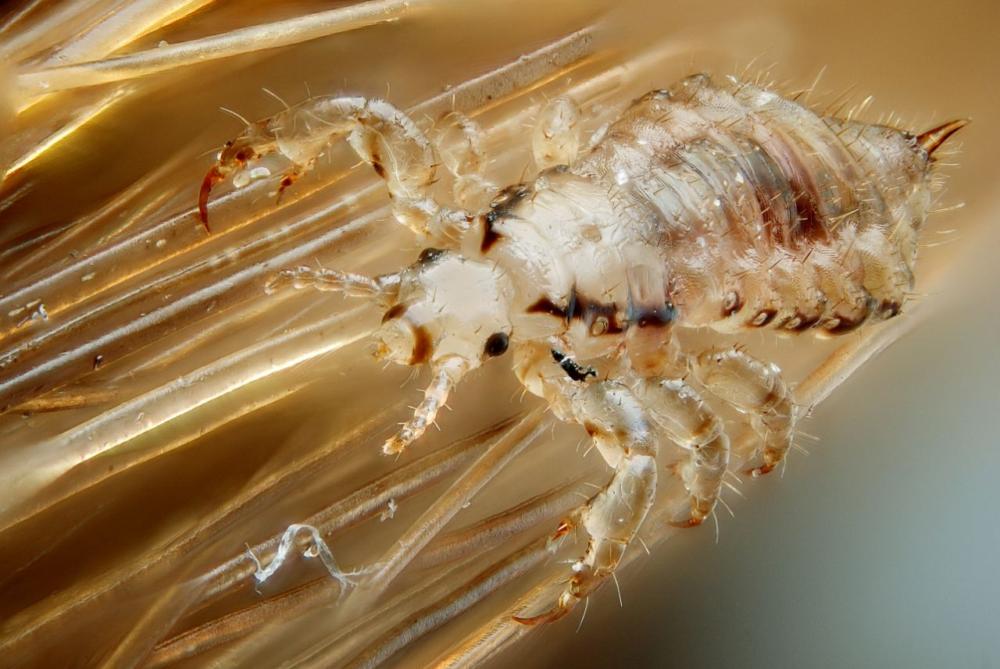
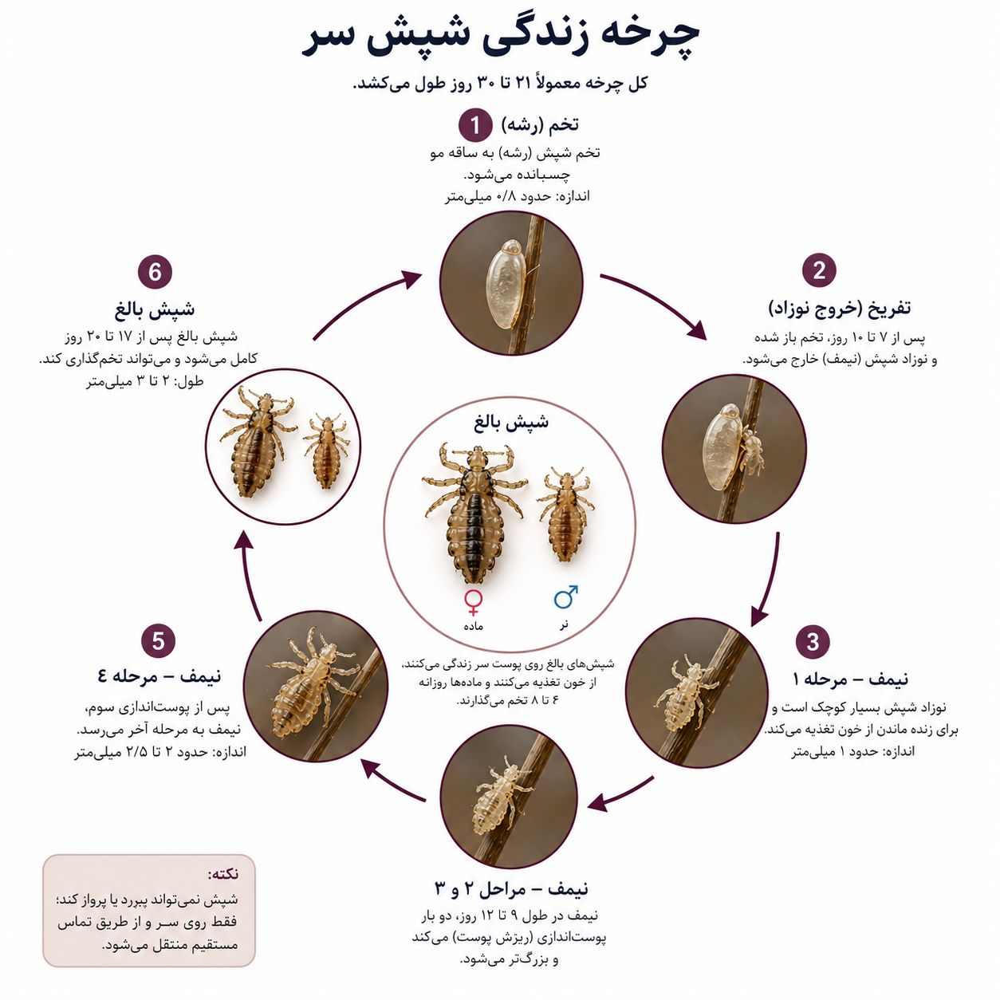
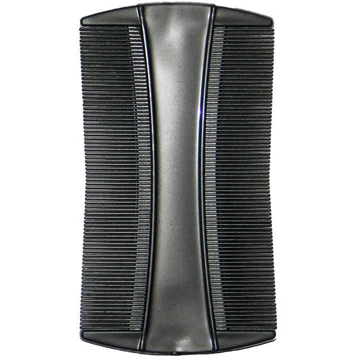

تصور کنید کودکتان مرتب سرش را میخاراند، شبها بیقرار است و شما با بررسی موهایش، موجودات ریزی را میبینید که به سرعت در میان تارهای مو حرکت میکنند. این صحنهٔ آشنا برای بسیاری از خانوادهها، نشانهی حضور شپش است.
شپش سر (Pediculus humanus capitis) یکی از شایعترین آفات انسانی است که بهویژه در میان کودکان سنین مدرسه شیوع بالایی دارد. این حشرات کوچک و خونخوار، با وجود اندازهٔ بسیار کوچکشان، میتوانند آرامش را از یک خانواده بگیرند و در صورت عدم درمان بهموقع، به یک معضل بزرگ تبدیل شوند.
برخلاف تصور رایج، شپش ارتباطی با بهداشت فردی ندارد و میتواند در تمیزترین موها نیز زندگی کند. این حشرات فقط از خون انسان تغذیه میکنند و بهراحتی از طریق تماس مستقیم سر به سر، استفاده از وسایل شخصی مشترک مانند شانه، برس، کلاه و حتی بالش، از فردی به فرد دیگر منتقل میشوند.
در این مقاله جامع، شما را با همه چیز درباره شپش سر، روشهای تشخیص، درمانهای خانگی و پزشکی، و مهمتر از همه، روشهای اصولی و تخصصی سمپاشی شپش آشنا میکنیم.
شپش سر یک حشرهٔ کوچک، بیبال و انگل خارجی است که بهطور اختصاصی روی پوست سر انسان زندگی میکند و از خون او تغذیه میکند. این حشرات به رنگ قهوهای مایل به خاکستری هستند و پس از تغذیه از خون، تیرهتر میشوند.
| ویژگی | توضیح |
|---|---|
| اندازه | ۲ تا ۴ میلیمتر (به اندازه یک دانه کنجد) |
| رنگ | قهوهای مایل به خاکستری (پس از تغذیه تیرهتر میشود) |
| طول عمر | حدود ۳۰ روز روی پوست سر |
| تغذیه | منحصراً از خون انسان (هر ۳ تا ۶ ساعت یکبار) |
| تولید مثل | هر ماده روزانه ۶ تا ۱۰ تخم میگذارد |
| مقاومت | تخمها (بچهشپشها) مقاومترین مرحله هستند و بهسختی از بین میروند |

چرخه زندگی شپش شامل سه مرحله است:
تشخیص بهموقع شپش، کلید موفقیت در ریشهکنی آن است. این نشانهها را جدی بگیرید:
| شپش | شوره سر |
|---|---|
| به ساقه مو میچسبد و بهسختی جدا میشود | بهراحتی با تکان دادن مو جدا میشود |
| رنگ سفید مایل به زرد | رنگ سفید یا کرم |
| محل چسبندگی نزدیک به پوست سر | در تمام طول مو پراکنده است |
| با انگشت فشار دهید، صدای تق میدهد | بدون صدا است |
اگر شپش بهموقع درمان نشود، ممکن است عواقب زیر را به همراه داشته باشد:
| عارضه | توضیح |
|---|---|
| عفونت ثانویه | خاراندن شدید باعث ایجاد زخم و عفونتهای باکتریایی میشود. |
| التهاب پوست سر | واکنش آلرژیک به بزاق شپش باعث قرمزی و التهاب میشود. |
| اختلال خواب | خارش شبانه باعث بیخوابی و کاهش کیفیت زندگی میشود. |
| آسیبهای روانی | شپش میتواند باعث استرس، اضطراب و کاهش اعتمادبهنفس، بهویژه در کودکان شود. |
| انتشار به سایر افراد | شپش بهسرعت در خانواده و محیطهای شلوغ منتقل میشود. |
شپشها قدرت پرش و پرواز ندارند و فقط از طریق تماس مستقیم یا غیرمستقیم منتقل میشوند. راههای اصلی انتقال:
| مسیر انتقال | توضیح |
|---|---|
| تماس مستقیم سر به سر | شایعترین راه انتقال، بهویژه در میان کودکان |
| استفاده از وسایل شخصی مشترک | شانه، برس، کلاه، روسری، بالش، حوله و گیره مو |
| نشستن روی مبلمان مشترک | در صورت آلودگی شدید، شپش میتواند از طریق مبلمان نیز منتقل شود. |
| استفاده از تخت یا رختخواب مشترک | انتقال از طریق بالش و ملحفه |
| حیوانات خانگی | شپش انسان از حیوانات تغذیه نمیکند، اما ممکن است بهطور موقت روی آنها باشد. |
برای درمان شپش، رویکردهای مختلفی وجود دارد که از روشهای خانگی تا درمانهای پزشکی و سمپاشی تخصصی را شامل میشود.

استفاده از شانه مخصوص شپش با دندانههای بسیار ریز (با فاصله کمتر از ۰.۳ میلیمتر) یکی از مؤثرترین روشهای فیزیکی برای حذف شپش و تخمهای آن است. این شانهها بهویژه برای از بین بردن تخمهایی که به ساقه مو چسبیدهاند، بسیار کارآمد هستند.
📌 نکته طلایی: شانه مخصوص شپش را میتوانید از داروخانهها تهیه کنید. استفاده منظم از این شانه، بهویژه پس از شستشوی مو با نرمکننده، تأثیر بسیار بالایی در کاهش جمعیت شپش دارد.
نحوه استفاده از شانه مخصوص شپش:
شامپوهای حاوی پرمترین یا پیرترین از جمله داروهای خط اول درمان شپش هستند. این شامپوها را باید طبق دستورالعمل مصرف کرد و معمولاً یک هفته بعد تکرار میشوند.
نکته: این محصولات فقط شپشهای زنده را از بین میبرند و روی تخمها تأثیری ندارند، بنابراین تکرار مصرف و استفاده همزمان از شانه مخصوص ضروری است.
روغنهایی مانند روغن درخت چای، روغن نعناع و روغن اسطوخودوس دارای خواص حشرهکشی هستند و میتوانند در کاهش جمعیت شپش مؤثر باشند.
نحوه استفاده:
سرکه به حل شدن چسب تخمها کمک میکند و جداسازی آنها را آسانتر میکند.
نحوه استفاده:
یکی از مهمترین و اغلب نادیدهگرفتهشدهترین مراحل، سمپاشی محیط زندگی است. شپشها و تخمهای آنها میتوانند روی وسایل شخصی، مبلمان، تشک، بالش و فرش باقی بمانند و باعث آلودگی مجدد شوند.
شرکت سمپاشی نانوفناوران با استفاده از سموم استاندارد و روشهای تخصصی، عملیات زیر را انجام میدهد:
پس از درمان، با رعایت این نکات میتوانید از بازگشت مجدد شپش جلوگیری کنید:
خیر، شپش به هر نوع مویی حمله میکند و ارتباطی با سطح بهداشت فرد ندارد. این انگل فقط از خون تغذیه میکند.
شپش بالغ بدون تغذیه، حداکثر ۲ تا ۳ روز زنده میماند. اما تخمها (بچهشپش) میتوانند تا ۱۰ روز در محیط باقی بمانند و پس از باز شدن، شروع به تغذیه کنند.
بله، محصولات استاندارد و مجاز برای کودکان بالای ۲ سال بیخطر هستند. اما همیشه باید طبق دستورالعمل مصرف شوند و در صورت حساسیت، مصرف قطع شود.
در مناطق پیشرفته، شپش معمولاً ناقل بیماری نیست. اما در مناطق محروم، شپش میتواند ناقل بیماریهای خطرناکی مانند تب شپشی (تیفوس) باشد.
شایعترین دلایل:
شپش سر یکی از شایعترین آفات انسانی است که میتواند بهسرعت در خانوادهها و محیطهای آموزشی منتشر شود. با تشخیص بهموقع، استفاده از روشهای درمانی مؤثر مانند شانه مخصوص شپش و مهمتر از همه، سمپاشی تخصصی محیط، میتوان بهطور کامل و قطعی از شر این انگلهای مزاحم خلاص شد.
شرکت سمپاشی نانوفناوران با بیش از ۲۰ سال تجربه و استفاده از پیشرفتهترین روشهای کنترل آفات، آماده ارائه خدمات تخصصی و تضمینی به شماست. تیم کارشناسان ما با استفاده از سموم استاندارد و تجهیزات مدرن، شپش را بهطور کامل از محیط زندگی شما حذف میکنند و آرامش را به خانواده شما بازمیگردانند.
🚀 همین حالا اقدام کنید:
📞 تماس فوری: ۰۹۱۲۰۷۰۵۷۴۶
💬 درخواست مشاوره رایگان: از طریق واتساپ یا ایتا
🔗 مشاهده سایر خدمات: کنترل آفات مسکونی